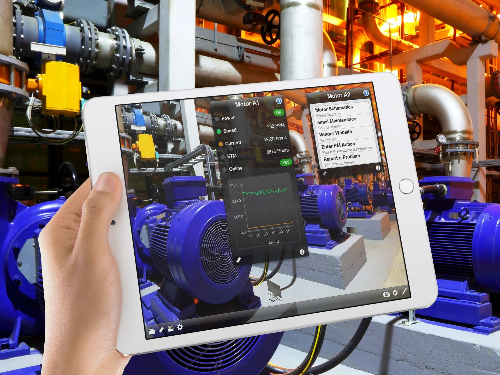

iQagent generates a QR code for each machine, or maps to the barcode asset tag you already use. Scan it with a phone, a tablet or a RealWear HMT and get live data, manuals, videos and forms for that exact piece of equipment. Faster fixes, fewer trips to a desk, and no more paper forms.
iOS · Android · RealWear HMT · Install on your server, in the cloud or on a VM

Every machine, line or area becomes a point of interest (POI): a QR code or your existing asset tag, linked to everything you want people to see.
Print the QR code that iQagent generates and place it on the equipment, or map your existing barcode asset tag. Then scan it with a phone or tablet camera, or hands-free with a voice-controlled RealWear HMT.
Live process data, manuals, videos, drawings and open forms for that exact piece of equipment appear on the screen.
Fill in a form, even offline. Share an annotated photo or video with a remote expert. Get alerted when something needs attention.
Technicians see the live values and the right manual at the machine, so problems are diagnosed on the first visit.
Share annotated images and videos with experts anywhere, so an expert can guide a repair without travelling to the plant.
Push notifications and email alerts reach the right people when a condition needs attention.
Build forms with drag and drop and fill them in on the device, including where there is no network coverage.
Create inspection, checklist and log forms yourself, with no programming.
Complete forms without a connection and sync when the device is back in range.
Notify people on their devices or by email.
iOS and Android devices, plus the RealWear HMT for hands-free work.
Install on a local server, a cloud server or a virtual machine, and be running in minutes.
Map POIs to the tags already on your equipment instead of relabelling the plant.
Plant IT teams ask about this first, so we put it up front.
Pricing depends on the number of users and POIs and on how you host it. PLACEHOLDER: replace with tiers or a starting price when decided.
A point of interest: a machine, line or area in your plant that you attach a QR code or asset tag to, with everything about it linked behind that tag.
No. iQagent can map POIs to the asset tags you already use.
Forms can be completed offline and are uploaded when the device reconnects.
On your own server, a cloud server or a virtual machine.
iQagent reads from OPC DA servers, OPC UA servers and ODBC databases.
Traffic between the apps and the server is encrypted with TLS. Each client app has a token that must be registered with the server before it can connect. iQagent doesn’t send plant data to us or to anyone else. Only the push notifications you configure leave your network.
iOS and Android phones and tablets, and the RealWear HMT. Other smart glasses and Microsoft HoloLens are not supported.
Book a 30-minute demo and we’ll walk through iQagent using your kind of machines and forms.